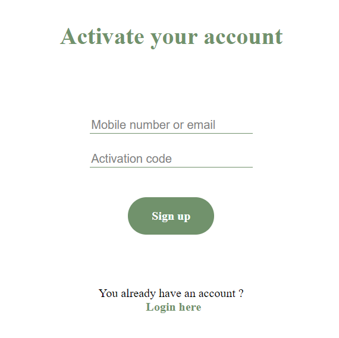

Cuprins
Scop
Scopul acstui document SRS este de a descrie functionalitatea esentiala a aplicatiei Realtime Suport Chat si detalii privind aspectul si interactiunea cu utilizatorul.Introducere
Realtime Suport Chat este o solutie web prin care administratorii unei aplicatii pot sa comunice in timp real (1 la 1 sau 1 la N) cu utilizatorii. Acest proeict are scopul de a fi folosit de catre companii in comunicarea acestora ci clientii, oferind un mediu de utilizare simplu si familiar majoritatii oamenilor.
Principale noastre obiective
- Incurajarea apelarii la suportul oferit de persoanele specializate in mediul online
- crearea unei aplicații ușor de utilizat de către utilizatorul comun deoarece majoritatea oamenilor consideră prea complicat sau ineficient procesul standard de " customer support"
Referinte
Acest proiect are ca inspiratie platforma "Drift" despre care puteti afla mai multe accesand urmatorul link: Drift.com
Structura
Am dezvoltat doua componente principale: paginile web front-end si serverul back-end pentru a ilustra functionalitatea aplicatiei. De asemenea, am folosit Node.js ca platforma pentru back-end.
Front-end
Fiecare pagina web imparte un design comun cu celelalte.In continuare vom prezenta functionalitatea fiecarei pagini.
Pagini responsabile de gestionarea contului
Pagina de login are un design simplu, foloseste un formular care primeste ca input doua campuri: Email / Numarul de telefon si parola. De asemenea, datele introduse de utilizator sunt verificate pentru respectarea structurii corespunzatoare pentru a il avertiza in cazul unei erori de scriere. Paginile destinate inregistrarilor de conturi si de gestiune a parolelor au la baza un formular asemanator cu cel de pe pagina de login.Login

Activate account

Reset password

Set new password

Pagina aplicatiei de chat continua designul simplu de utilizat pentru utilizator. Pagina este compusa din 3 mari sectiuni: mesaje recente, fereastra actuala de chat si formularul destinat scrierii mesajelor.